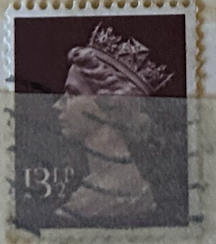
| SOURCE | TITLE| IMAGE MATCH | click to source page |
| eBay | Great Britain, Postage Stamp, #MH169, MH175-176 Used, 1970 Machins Queen (AC) | eBay | 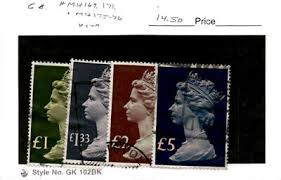 |
| Find Your Stamps Value | Value of queen elizabeth postage 2/6 stamps | 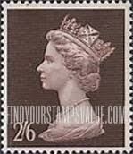 |
| Windsor Stamps | Double Heads | GB Stamps | Windsor Stamps | 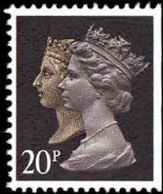 |
| eBay | Great Britain Stamp Scott #MH173, 1.5L, Machin, Bright Olive, Used, SCV$5.00 | eBay | 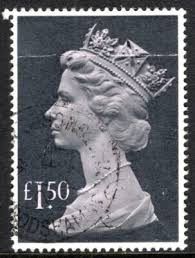 |
| eBay | 75p Denomination British Elizabeth II Stamps for sale | eBay |  |
| thestampbook.co.uk | Somaliland Protectorate QEII Definitive Stamps 1953-58 | 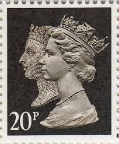 |
| Collect GB Stamps | pb2704 Penny Black Anniversary | 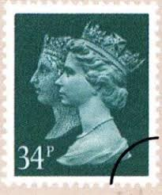 |
| John Rice Stamps | Machin definitives 'Y' numbers.(LITHO & RECESS printings) Stamps - Vintage stamps for sale | 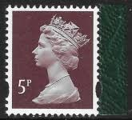 |
| Colnect | Stamp: Queen Victoria and Queen Elizabeth II (United Kingdom of Great Britain & Northern Ireland(150th Anniversary of the Penny Black) Mi:GB 1241.17.1,Yt:GB 1435a,Sg:GB 1470,Un:GB 1432e 📮 | 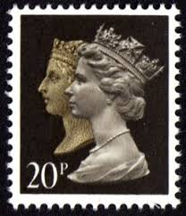 |
| HipStamp | Great Britain #624 1 1/2P Elizabeth, used EGRADED VF-XF 85 | Great Britain, General Issue Stamp / HipStamp | 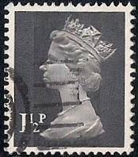 |
| Dreamstime | 5,183 Britain Stamp Stock Photos - Free & Royalty-Free Stock Photos from Dreamstime | 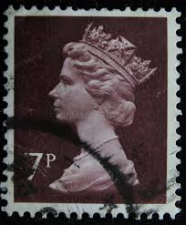 |
| eBay | 43p Denomination British Stamps for sale | eBay | 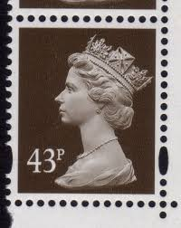 |
| Dauwalders | SGY1761 1p | 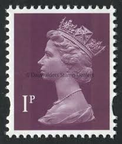 |
| postagestampsgalore.co.uk | Collect GB stamps - Great Britain stamp Collection | 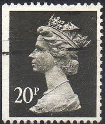 |
| Ida Franco (idafranco) - Profile | Pinterest | 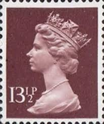 | |
| norphil.co.uk | Norvic Philatelics Blog: February 2013 | 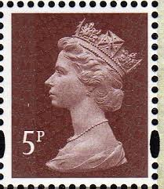 |
| ProBoards | Postmark Calendar | The Stamp Forum (TSF) | 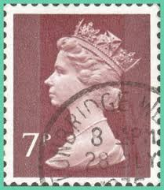 |
| EdinPhoto | Post Card History - Stamps on postcards sent to the UK | 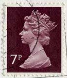 |
| thestampbook.co.uk | Carson MicroBrite Plus Review – LED Lit Microscope | 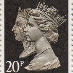 |
| eBay UK | Decimal 1 Number Great Britain Elizabeth II Machin Definitive Stamps for sale | eBay UK | 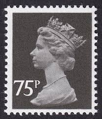 |
| HipStamp | 1977 Queen Elizabeth II 2£ (T-5671) | Great Britain, Stamp / HipStamp | 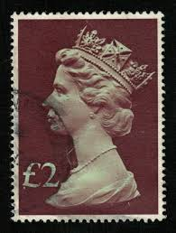 |
| IG Stamps | SG2955 20p 2 Band Double Head Machin Stamp Cartor Print with Elliptical Perforations | 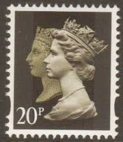 |
| lastdodo.com | Wellingborough BC Perfin catalogue - LastDodo | 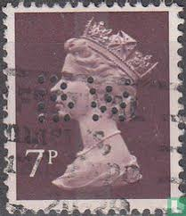 |
| iStock | England Postage Stamp Stock Photo - Download Image Now - Arts Culture and Entertainment, Black Background, British Culture - iStock | 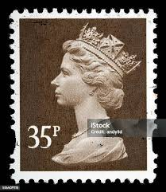 |
| Dreamstime.com | 126 Elizabeth 1977 Stock Photos - Free & Royalty-Free Stock Photos from Dreamstime | 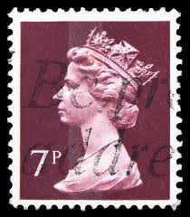 |
| Flickr | beautiful stamp Machin GB 20p black stamp Queen Victoria a… | Flickr | 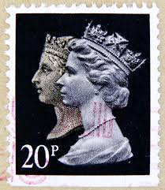 |
| Encyclopaedia Philatelica | he was member of a team of sculptors from the Royal Academy to create a new effigy of the queen in preparation for the new decimal coinage. Using photographs of her by | 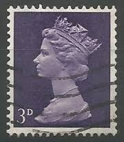 |
| Alamy | Constitutional monarch hi-res stock photography and images - Alamy | 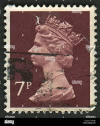 |
| Stamp Community Forum | Queen Elizabeth II And Our Hobby. - Stamp Community Forum | 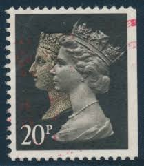 |
| Adminware | S I M P L I F Y I N G T H E M A C H I N S | 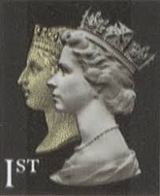 |
| the-philatelist.com | Great Britain? year, The Philatelist nominates this to be the final postage stamp – The-Philatelist | 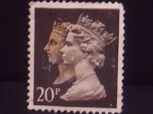 |
| Colnect | Stamp: Queen Elizabeth II - 4d Predecimal Machin (United Kingdom of Great Britain & Northern Ireland(Queen Elizabeth II - Predecimal Machin) Mi:GB 456,Sn:GB MH6,Yt:GB 475,Sg:GB 731,AFA:GB 456,Un:GB 475d 📮 | 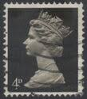 |
| Alamy | Ireland postage stamp hi-res stock photography and images - Page 11 - Alamy | 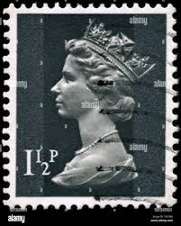 |
| eBay | Great Britain Stamp Scott# MH171 Queen Elizabeth 1970-95 Used L459 | eBay | 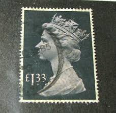 |
| Any significance to this stamp on my block? | 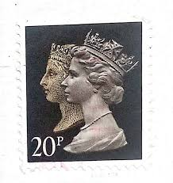 | |
| HipStamp | Great Britain #633 9P Queen Elizabeth 2, used F-VF | Great Britain, General Issue Stamp / HipStamp | 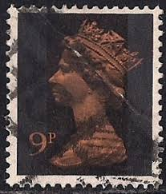 |
| Windsor Stamps | Non Value Indicators | GB Stamps | Windsor Stamps | 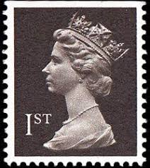 |
| british-stamps.com | British Stamps | Browse Stamps | Elizabeth II (Decimal from 1971) | 1990 1d Black "Double Heads" Collection | 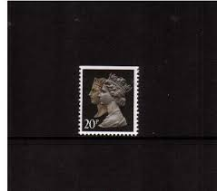 |
| Dauwalders | MACHINS Y series 1993 Elliptical Perfs | 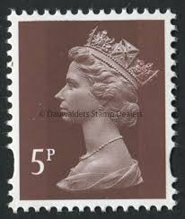 |
| Collect GB Stamps | pb2706 London Life | 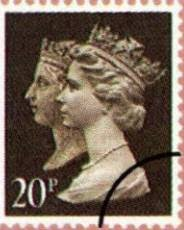 |
| Colnect | Stamp: Queen Elizabeth II - Decimal Machin (United Kingdom of Great Britain & Northern Ireland(Queen Elizabeth II - Decimal Machin - Normal Perfs) Mi:GB 562.14.1,Yt:GB 606a,Sg:GB X845,Un:GB 606e 📮 | 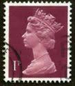 |
| commonwealthstamps.com | Postage Stamps of Great Britain Queen Elizabeth II Pre Decimal - Page 4 | 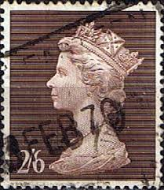 |
| Shutterstock | 9 Velikabritaniya Royalty-Free Images, Stock Photos & Pictures | Shutterstock | 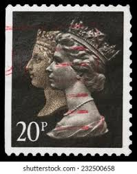 |
| thestampbook.co.uk | GB QEII 1990 Machin 150th Anniversary of the Penny Black : Photogravure & Lithography | 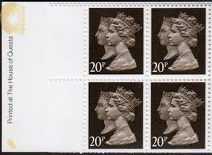 |
| BB Stamps | Elliptical Y Numbered Machins – Great British Stamps 1840 to DATE. Mint & Used GB Stamps | 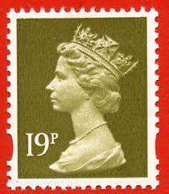 |
| Alamy | Machin stamp hi-res stock photography and images - Page 2 - Alamy | 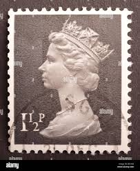 |
| eBay | 1967-70 SG723-44 Machin Definitives Pre-Decimal Multi-Listing Unmounted Mint MNH | eBay | 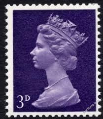 |
| allnumis.com | 20 Pence 1990 - Queen Victoria and Queen Elizabeth II, 1990 - Great Britain - Stamp - 51816 | 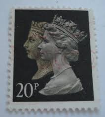 |
| Mystic Stamp Company | MH18//21 - 1969 Great Britain - Mystic Stamp Company | 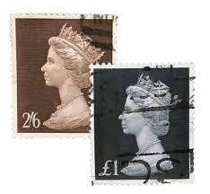 |
| eBay | PRESTIGE BOOK STAMPS - U3060 TO U3157. MULTI LISTING, UN/MINT (MIN ORDER £4.50) | eBay | 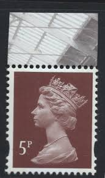 |
| Alamy | Queen Elizabeth II, Machin series, postage stamp, UK, 1990 Stock Photo - Alamy | |
| Blogger.com | Ελληνικά Γραμματόσημα - Greek Stamps & Thematic colections: Penny Black | |
| Shutterstock | 85+ Thousand Queen Elizabeth Ii Third Portrait Royalty-Free Images, Stock Photos & Pictures | Shutterstock |  |
| eBay | Great Britain Post Office Training Stamps {Multi-Listing} UNMOUNTED MINT MNH | eBay | |
| eBay | 1927 Italy - Kingdom - Michetti No. 214-17 - 4 Values - MNH** | eBay | |
| eBay | UK - 1967 - Definitives - Queen Elizabeth II - 3D - #2530 | eBay | |
| PicClick UK | 1840-1990 COMMEMORATIVE THE Penny Black Stamp & 20P Stamp In Miniature Sheet £3.84 - PicClick UK | |
| eBay | GREAT BRITAIN used Machins plus Castles 12 stamps on paper | eBay | |
| eBay | GB 1986/87 Yvert C 608f-1 50p booklet 1 x 1p + 1 x 13p + 2 x 18p Roman Theatre | eBay |